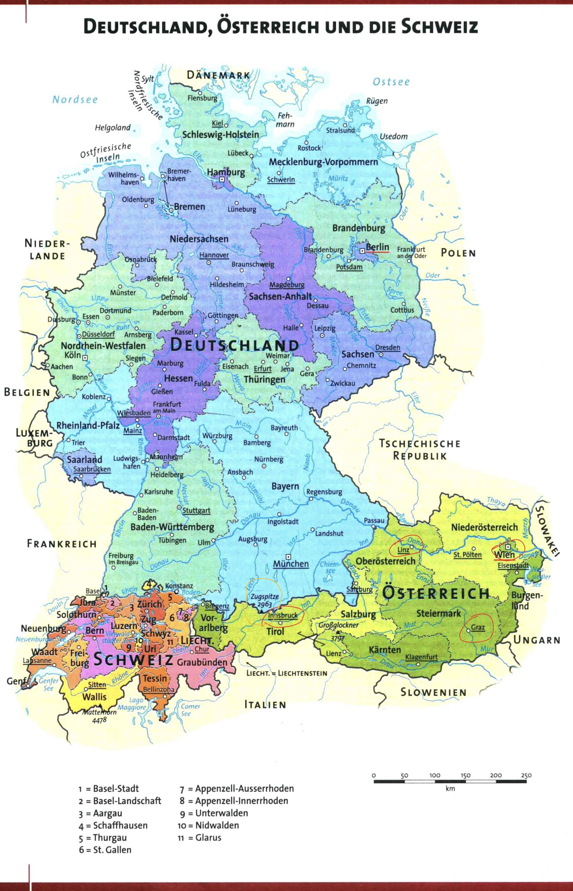

2026-11-18 · 教材 S.48 / S.50 + 板书
廖欣 · 城市、国家、格
咖啡馆对话 · 问句语调 · 名胜与地图 · 一格/三格/四格 · 人三物四 · war / waren
练习
每句都能点 🔊 听
每天 10 分钟
今天的两条主线：① 会聊旅行——你去过哪儿？那到底在哪儿？② 认识「格」——一格是「谁在做」，四格是「做什么」，三格是「给谁」。
老师板书的口诀是 1 是 1，1 做 4；有人的时候是 人三物四：Ich kaufe dem Kind eine Tasche。
卡点一 · 格只看句子里的位置，不看名词本身：主语用一格，直接宾语用四格。
卡点二 · 人三物四一个人、一个东西同时出现时：人拿三格（dem/der），物拿四格（den/das/die）。
卡点三 · 问句语调W-Frage 句尾往下落，Ja/Nein-Frage 句尾往上抬；过去时用 war / waren。
① 听先点 🔊 听对话，只听，不跟。
② 跟按「块」跟读，注意句尾是升还是降。
③ 做先读完整句，再做题；做错就看下面的讲解。
今天的任务清单 勾一个算一个
第一步 · 今日对话 教材 S.50
先整段听一遍，再按「块」跟读。读的时候注意：Wie geht's? 连读成一个词；denn 读轻，意思是「到底」；句尾是升还是降，听音频模仿。
断句跟读 先读块，再读整句
竖线也是换气点。点每一块单独听，读顺了再把整句连起来，最后勾「读了三遍」。
第二步 · 句重音与问句语调 教材 S.50 · 2
默认重音在句末最后一个实词；教材 2a 特意对比了 Woher 'kommen Sie? 和 Und woher kommen 'Sie?——重音位置不同，强调的东西就不同。
语调规则：W-Frage 降调 ↘，Ja/Nein-Frage 升调 ↗，陈述句降调。
第三步 · 名胜 · 城市 · 国家 教材 S.48
四个名胜都用 der / die 记：der Eiffelturm、der Big Ben、der Schiefe Turm、die Akropolis。Prater 也在这组：der Prater 在 Wien。
第四步 · 地图：德国 · 奥地利 · 瑞士 教材背面地图

国家名 · 大部分不加冠词
德国 16 个联邦州
奥地利 9 个州
瑞士（26 个州，先认这几个）
用 war / waren 说旅行
第五步 · 语法练习 11/18 板书
一格 der / das / die 四格 den / das / die 三格 dem / dem / der（复数 den）
口诀：1 是 1（主语用一格）；1 做 4（直接宾语用四格）；人三物四（人用三格，物用四格）。
第六步 · 录下来，自己听 和老师的声音对比
读下面任意一句，点「开始录音」→ 读 → 点「停止」→ 点「回放」。先听自己的，再点 🔊 听老师的，比较：重音对不对、块内有没有停、句尾有没有降下来。
微信里可能不给麦克风权限，用 Safari / Chrome 打开最稳。
第七步 · 数字复习 板书里的三位数和大数
① 0–20 和整十
② 三位数：先说百，再说个位 + und + 十位
123 = hundertdreiundzwanzig，678 = sechshundertachtundsiebzig。dreißig 是 30，别写成 dreizig。
③ 大数：tausend / Million / Milliarde
1 234 = (ein)tausendzweihundertvierunddreißig；1 000 000 = eine Million；1 000 000 000 = eine Milliarde。
④ 自己读：先读数字，再点开对答案